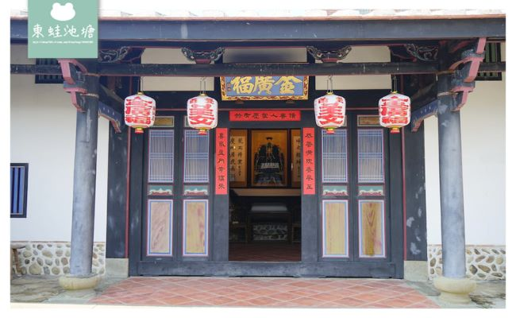
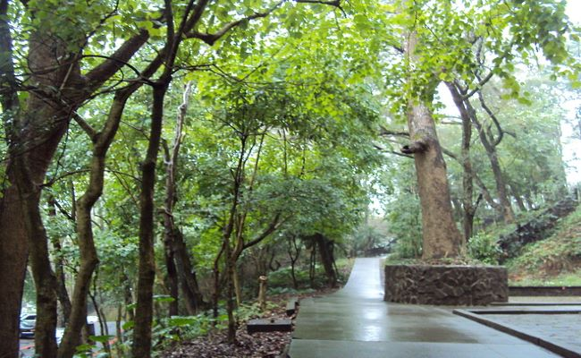
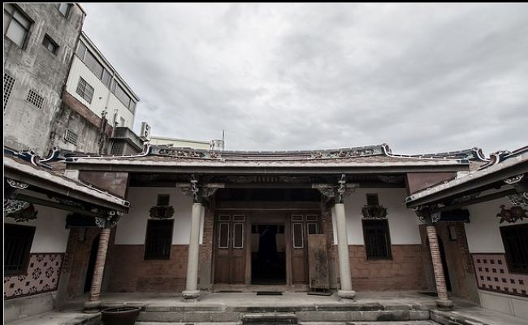
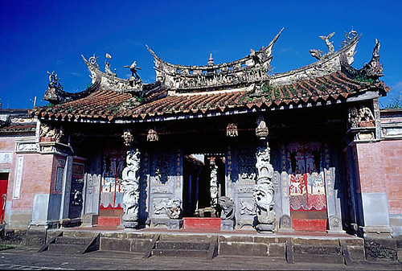
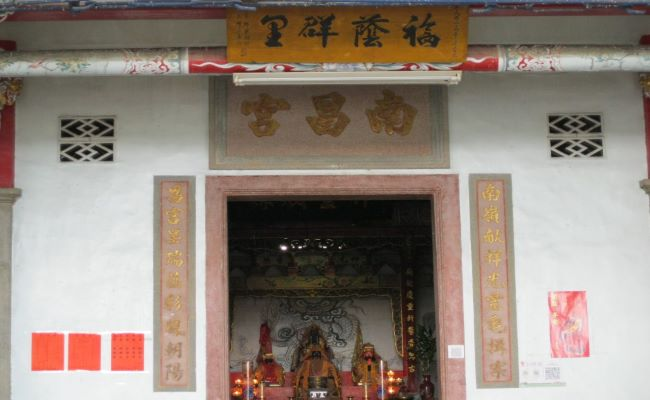
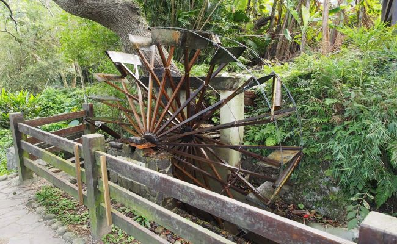
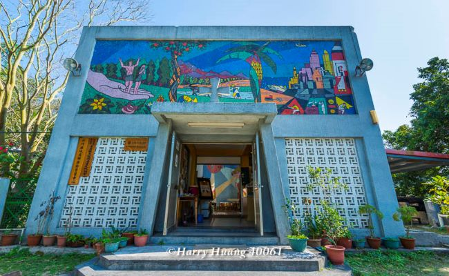
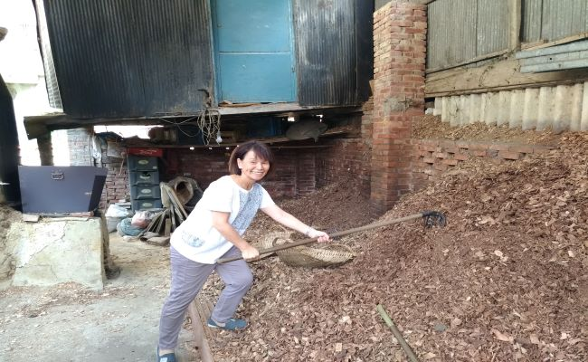
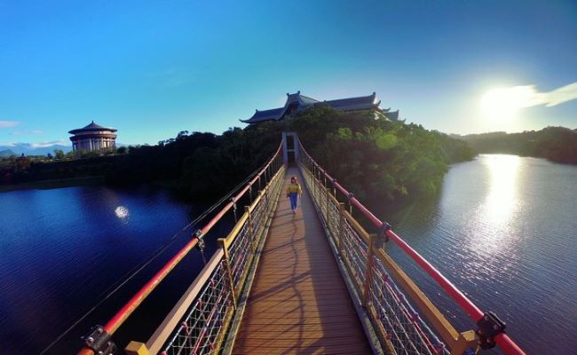

客庄文化休閒觀光導覽
報名由此去
一、六家水圳園區導覽
二、新埔小鎮文化導覽
三、關西小鎮文化導覽
四、大隘地區文化導覽
五、竹東客庄文化導覽
大隘地區文化導覽
金廣福公館

天水堂
歷史沿革
天水堂，北埔人慣稱為姜屋，是開拓新竹縣大隘地區的開山祖姜秀鑾所建的宅第，姜紹祖的故居，位於新竹縣北埔鄉中正路1號，也就是在金廣福公館的左前方，因姜氏的郡望堂號為天水郡(今甘肅省天水市)，故名天水堂。天水堂確實之創建年代無詳細紀錄，應為清道光15年(西元1835年)姜秀鑾入墾北埔後所建立。天水堂以秀鑾山為樂山，形勢穩定優美，為一堂六橫之三合院格局。
建築描述
天水堂之門樓（或稱門屋）為燕尾造型，且台階有特大台面，號稱全台最優美的門樓之一。天水堂一百多年來皆由姜氏家族自力修繕及維護，從未接受政府的補助，能完整保存其原有風貌實屬不易，內部仍有姜家後代居住，屬私人宅院，並未開放參觀。
其他資訊
依內政部七十四台內民字第238095號公告將天水堂列入金廣福古蹟區範圍內，為國家一級古蹟，2005年文資法修正後改稱國定古蹟。
秀巒公園

鄧南光紀念館
歷史沿革
縣府文化局表示，北埔地方人稱「柑園」、「世源醫院」的鄧南光影像紀念館，利用文化部地方文化館案經費，執行空間再利用規劃並委外營運，2009年10月底正式開館，以鄧南光攝影作品為主軸，舉辦影像展等多元化活動，迄2017年10月底合約屆滿後由鄧家收回。北埔鄉長莊明增表示，鄧南光影像紀念館是北埔老街聚落的重要建築，荒廢十分可惜，因此他上任積極與鄧家接洽，終獲屋主鄧永堅同意並達成共識，由公所承租，日前已完成簽約8年，連同周邊土地共10多筆，年租金近170萬元，近期將先著手整理館內環境。
建築描述
未來，公所擬朝4個方向規劃，首先是保留鄧南光影像主題，持續推廣他的攝影藝術，同時將恢復「世源醫院」保存在地人記憶；其次，將作為北埔遊客服務中心，行銷老街文化與北埔特產；第三，為解決北埔老街假日停車空間及公廁不足的問題，將利用後方700多坪土地闢建停車場及公廁；最後，將規劃一處複合式商店提供多元化服務。莊明增說，公所將編列預算，同時提案向中央爭取經費，逐步執行上述規劃，希望讓鄧南光影像紀念館在融入在地特色與期待後，展現新風貌。
其他資訊
鄧南光本名鄧騰輝，1907年生於北埔，曾創辦台灣攝影文化協會，一生行腳紀錄，替台灣及北埔的歷史留下非常珍貴的資產。鄧南光故居建於1926年，為北埔地區第一棟RC造洋房，2006年公告為歷史建築。
忠恕堂

姜氏家廟
歷史沿革
竹縣縣定古蹟北埔姜氏家廟竣工落成於1924年，作為北埔最大家族的姜家，聘請了在當時台灣數一數二的名匠來興建祠堂。姜氏家廟由大木名匠葉金萬的高徒徐清規劃，彩繪部分是由廣東大埔名匠邱玉坡及邱鎮邦父子主筆，其擂金彩繪最為特別；木雕部分由徐清及徐春泉所主持，兩人雕工各具特色，人物生動活潑，令人嘆為觀止；石雕部分則為辛阿救的作品，祠內的建築工藝表現不凡，具有極高的藝術價值，可謂新竹縣的建築瑰寶，亦是客籍匠師的代表作。
建築描述
祠內的彩繪、石雕及木雕非常精緻，因匠藝之不凡而被譽為台灣四大家之一，具有極高的藝術價值。其中又以邱玉坡的擂金彩繪是一絕，邱玉坡是客家彩繪的名匠，為了姜氏家廟，跨海來台，為家廟留下國寶級的作品，也是目前全台僅存的作品（另一作品大溪齋明寺已於後來重繪）。
其他敘述
姜氏家廟位於北埔街區的南面，由於姜家在當時是北埔最大的家族，故聘請名匠來興建這座祠堂，姜氏家廟由大木名匠葉金萬的高徒徐清所規劃，整體為兩堂兩廊兩橫屋規模。
慈天宮

姜阿新宅
歷史沿革
姜氏家廟坐落於新竹縣北埔市街南側的邊緣地帶，更精確的說，是位於北側市街與南側田園的分界線上，地址為北埔鄉南興村9鄰25號，坐落在南興街15號旁巷道內，入口巷路並不明顯。在地籍方面，使用土地以北埔鄉公園段祠1023號土地為主，總佔地約1,500㎡，建築面積約836㎡。姜氏家廟為法度嚴謹中展現華麗而細膩的祠廟建築物，座東朝西，朝向260度方位角，其空間格局有嚴謹的規制與方位，包括臺基、牆身、石作、大木、鑿花、裝修、屋頂、裝飾、匾聯、彩繪等，其建築形式與作法均頗有可觀之處，其建材與施作匠師之技藝表現亦具特色。
建築描述
姜氏家廟的格局為左右對稱之「二堂二橫」建築，分金線（內外軸線）上由外而內分別有「前堂」（或稱前堂、門樓）、「中庭」、「正堂」（或稱正堂、大殿），正堂的兩側各設日井、月井及過水廊串連「左廂、右廂」【註1】（客家人稱為橫屋），中庭左右兩側置「廊」串連正堂與前堂，左右廊各自連接四垂亭再與兩廂廳堂相連，兩廂廳堂再向外延伸出廂房。各建築單元的組合關係，係以本堂為中心，循「內外軸」、「左右軸」向本堂集結，左右對稱，構成「二堂二橫」的合院形式。值得一提的是前堂屋頂的形式，外觀看似三川卻非三川，中央明間並沒有抬高一架，僅在屋頂的硬山大脊加上高厚的西施脊與箍帶，塑造出類似三川般華麗的外觀，又能維持結構系統的單純性，一舉兩得。
其他資訊
姜氏家廟落成初期，亦扮演著「會館」的角色，提供給外地族人旅次在北埔時落腳打尖的用途，特別是舉行春秋祭典時族人住宿所需，另一用途則為世良公嘗成員年度會議的場所。在西元1941舞(昭和17年)太平洋戰爭期間，左廂廳堂曾充當幼稚園教室，右廂則充當北埔國民學校教室。戰爭後期，姜氏家廟被日軍徵收作為囤積物資的堆棧，為了防禦需要，曾於前堂屋頂架設機關砲。西元1949年(民國38年)國府遷台，引入大量軍人、軍眷及戰爭難民，姜氏家廟的前堂、左右兩廂隨即被佔用充當住宅。因年久窳漏，又因被外省兵佔用，致使姜家不願出錢大整修，左廂中後段終於在西元1964年(民國53)完全倒塌損毀。因種種問題，姜氏家廟40餘年來不曾舉行過祭祖典禮，但建築物仍由姜家後代持續地小規模維修中。
南埔南昌宮

石爺
歷史沿革
昔日華龍村六鄰的鹿寮溪邊有兩顆一大一小的石頭，而四周又布滿許小石頭，狀似相依相偎，情景宛如和樂的一家人，因此被村民作為信仰中的石爺、石母。因兩顆大石處於溪流中，無鋼筋水泥砌成廟身，只用一片遮雨篷及擺設香爐。2001年納莉颱風，溪水空前暴漲，石母被沖至一百多公尺的下游處。村民們只好在該年9月24日向時任新竹縣長的林光華陳請，讓這兩石再度團聚。林光華在鄉代會副主席彭友明等人的陪同下，勘查災情後與諾當地居民，將於以人為主的救災行動告一段落後，隨即展開這項行動。
建築描述
2003年初，華龍村民擲筊，為石爺、石母安排成親，移居土地公旁。當年3月29日6點許，民眾將重八點四公噸的石爺、四公噸的石娘吊上岸，分乘以花朵裝飾的大花轎遶境。村民敲鑼打鼓，出動媽祖、城隍爺出巡證婚，也安排牛車、花鼓、龍隊、獅隊、八音與花童陣助興，讓近十五噸的石爺與石娘在數百歲的老茄苳樹前合影，再安座在村內土地公廟邊。
其他資訊
重新安座後，當地人將每年的3月28日訂為當地的客家情人節。安座該年獲贈數個匾額，有時任中華民國總統的陳水扁的「天長地久」、新竹縣長鄭永金的「恩愛萬世」、芎林鄉長林政良的「福裕德澤」等
百年水車

錦繡堂
歷史沿革
錦繡花園位處偏遠，初期的發展有相當的困難。約在三十多年前，宣道會西差會主席簡本立牧師和同工，看到這社區的屬靈需要，建立教會的異象由此而生。由於西差會的工作是差傳而非辦教會，因此和滕近輝牧師商量，由北角宣道會與西差會合作，在八一年夏天，創辦宣道會錦?幼稚園；同年十月，宣道會錦繡堂便在幼稚園內舉行聚會。八六年六月，教會向地政署申請在錦繡花園近消防局處興建教堂和社區中心，以便在傳福音和關懷社區的事工上，可以做得更好，榮神益人。幾經波折，地政署於九九年二月正式接受教會的買地申請，批出土地；同年十月十日教會舉行動土禮，而建築工程歷時兩年多才竣工，新堂在二零零一年十二月落成啟用，並在聖誕節舉行「新堂奉獻感恩典禮」。
建築描述
自錦繡堂成立至今，各教牧同工及弟兄姊妹忠心事奉，廣傳福音，全面開展聖工。二十年來，教會舉辦不同類別福音事工：佈道會、福音主日、旅行、電影欣賞會、音樂會、暑期聖經班、報佳音、福音營、健康檢查、老人院探訪及各類型講座等，使本區居民聽聞耶穌基督的福音，神將信主得救的人數不斷加給「錦宣」家。錦繡堂亦透過動感的敬拜、整全而有系統的培訓課程、彼此關顧的團契生活及多元化的事奉參與來造就信徒。錦繡堂於九九年初開辦閱覽室，社區中心亦於零二年開始投入服務，期望對本區坊眾提供身心靈的照顧。
其他資訊
無
峨眉天主堂

富興老茶廠

歷史沿革
工廠初為土埆厝，同樣也毀於日昭和10年(西元1935年)的關刀山大地震。今日所見的茶工廠，除靠廟坪前段的牆壁，仍是百年前的編竹夾泥牆所建造，其他係地震後重建。其內部建材以櫸木為主，此稱建材堅固耐用、防蟲蛀，因此能維持原貌至今。在6、70年前，這是富興唯一的茶工廠，終日車水馬龍，賣茶菁的茶農川流不息，盛極一時。後來隨著台灣農業的沒落，茶工廠的經營環境不佳，於民國80年初，停止了茶工廠的經營，當時的製茶機具、設備在原地保存至今，經仔細清潔整理後即呈現當年的風貌。
建築描述
民國95年富興茶廠被文化局登錄為歷史建築，獲得經費補助後於民國97年開始修建。終於在民國100年3月24日隆重舉辦?用典禮。除辦理茶葉推廣活動、深度導覽體驗外，內部並設立品茗區，供遊客品賞峨眉特產東方美人茶,未來將規劃引進茶席展演、茶染工藝等活動活化老茶廠的經營,並希望能從傳統文化中尋求創新，再造一個茶產業的黃金年代。
其他資訊
無
阿良頭樟腦寮

隆聖宮
歷史沿革
位於峨眉鄉富興村主祀關聖帝君。相傳墾民來此開拓之後沒多久一位信士高清盛（一作勝），來台時隨身攜帶有大陸玉泉山關聖廟關聖君靈符乙套，做為護身庇佑之用，高先生將靈符祀奉於隘寮，供墾民朝夕祭拜，祈求平安，之後的開墾事業一帆風順，眾人咸認是關聖君威靈廣大庇佑之故。另有傳說，道光二十年（西元1840年）某日夜間原住民出草前圍攻富興庄，幸關聖帝君顯聖來救將原住民驅離，得庄民始免於劫難，於是村民商議恭請關聖帝君寶像駕臨館內安爐登龕奉祀而關聖君靈符一併安奉於龕內奉祀。祀奉日勤，香火鼎盛，恩澤遍布鄰近村落。
建築描述
昭和十年（西元1935元）發生大地震，隆聖宮東南牆壁傾倒，於民國三十六年修繕復舊。民國四十九年因信徒認為隆聖宮廟址過低，需提高增建後殿，以增威靈，遂興工增建後殿一棟及東西走廊，雕換中堂金身。至民國五十年告竣，同時舉行慶成福醮。 民國八十六年因台三線拓寬工程及廟宇年久失修，決定加以整修。在地方士紳竭力奔馳，而各方善男信女樂捐下重建隆聖宮，並於民國八十八年農曆十一月十一日入火安座登龕。
其他資訊
無
細茅埔吊橋
